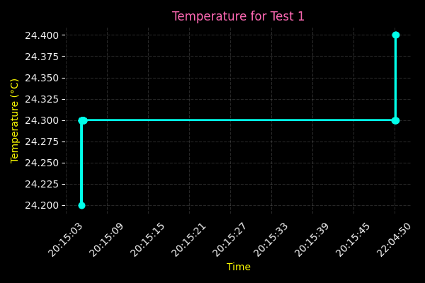

--
--
--:--:--
--:--:--
--/--/----
-- °C
-- °F
-- %
-- hPa
--, --, -- g
-- %
-- dBm
--h --m
--
Offline
The CubeSat Mission is an independent technology demonstration focused on the design, integration, and operation of a fully functional small-satellite platform. The objective is to develop and validate a compact flight system capable of collecting environmental measurements, executing onboard processing, and transmitting real-time telemetry through a custom ground segment.
The mission encompasses end-to-end spacecraft systems engineering, including avionics development, power management, environmental sensing, thermal considerations, and ground-to-payload communication architecture. All subsystems are being designed and tested to meet the operational expectations of a small research-class satellite.
Upon completion of ground qualification testing, the mission will advance to a high-altitude balloon flight. This near-space environment will serve as a proving ground to evaluate system performance, communication stability, and sensor behavior under reduced pressure, low temperatures, and high-altitude radiation exposure. Data collected during the flight will support verification of the payload, onboard software, telemetry framework, and overall mission readiness.
This project demonstrates what can be achieved through disciplined engineering, iterative testing, and a commitment to replicating real aerospace development processes on an independent scale.

The CubeSat Mission is led by Natasha Phillips, a multidisciplinary engineering student responsible for the design, development, and testing of all spacecraft subsystems included in the project. Phillips serves as the mission’s systems designer, software developer, payload integrator, and ground-segment architect. Her work includes embedded systems, sensor integration, power system planning, and real-time telemetry pipelines. She also designed and built the mission’s custom FastAPI backend and live dashboard to visualize telemetry data.
All spacecraft components within the mission scope, including electronics, firmware, telemetry software, environmental sensing systems, testing procedures, and mission analysis, have been developed and validated independently as part of her ongoing engineering training. The project reflects a hands-on, systems-level approach to learning and demonstrates her ability to plan, build, and operate small-scale spacecraft technologies while progressing through her studies.
Phillips aims to expand this platform into more advanced prototypes and contribute to future aerospace and satellite development efforts as her academic and professional experience grows.